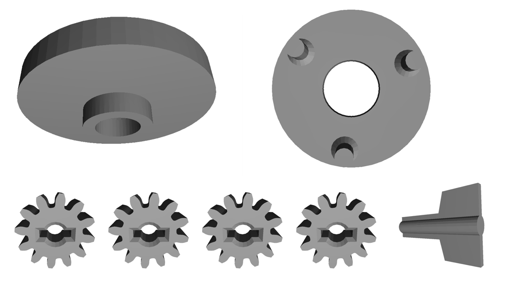
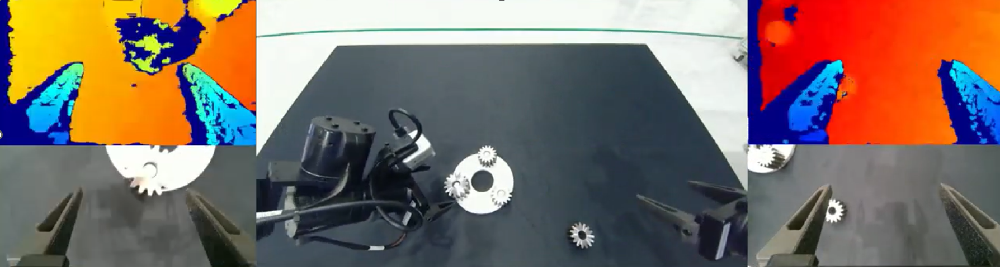

Operation objects

A real-and-simulation benchmark for human-centered robot collaboration with instruction following, error recovery, and autonomous continuation in industrial-style assembly.



Model, sensor setup, and key hardware details.
Task 2 is a subset of Task 1: it starts from an intermediate assembly state and continues the remaining steps.
Three tasks are scored with a 4 : 2 : 4 weighting. Final Score = (4*S1 + 2*S2 + 4*S3) / 10.
Documents are rendered through the built-in Markdown viewer instead of opening raw .md files directly.
Dataset host: Hugging Face dataset page.
Citation information will be updated after review policy allows release.